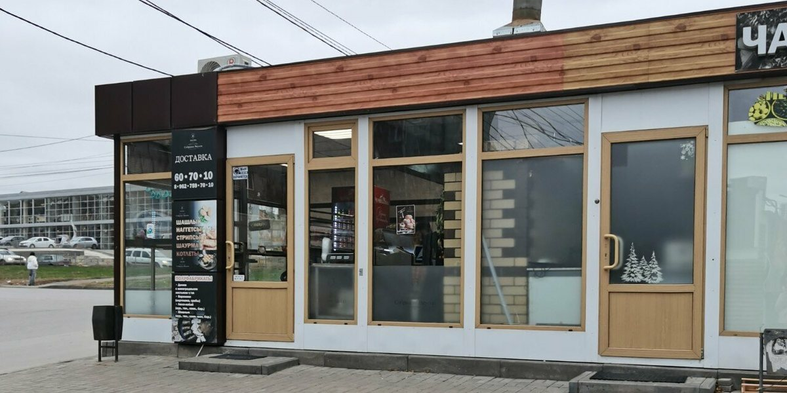
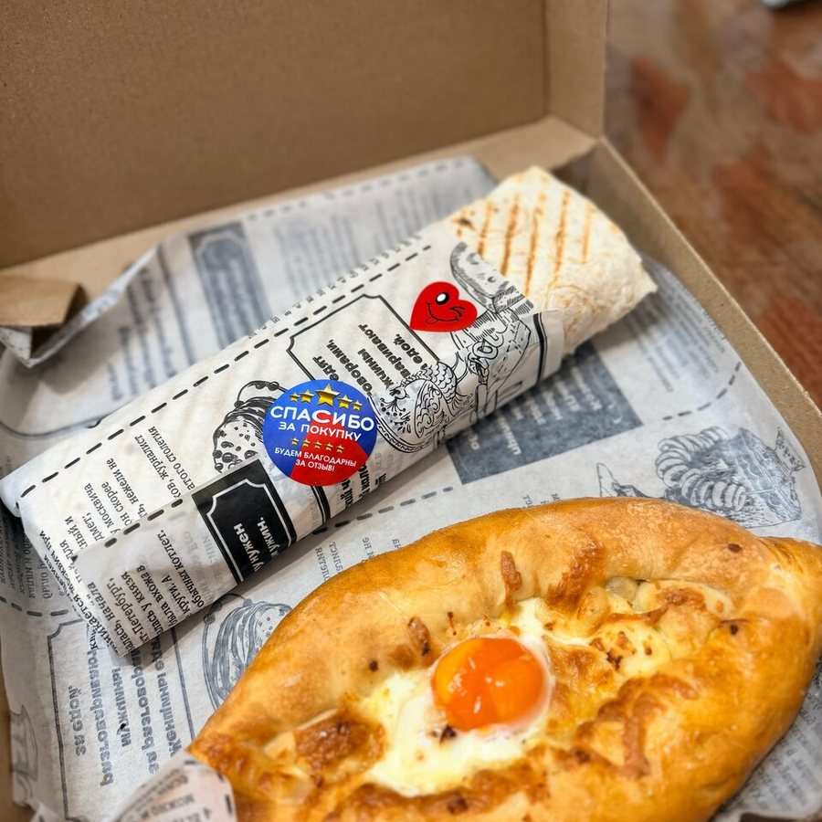
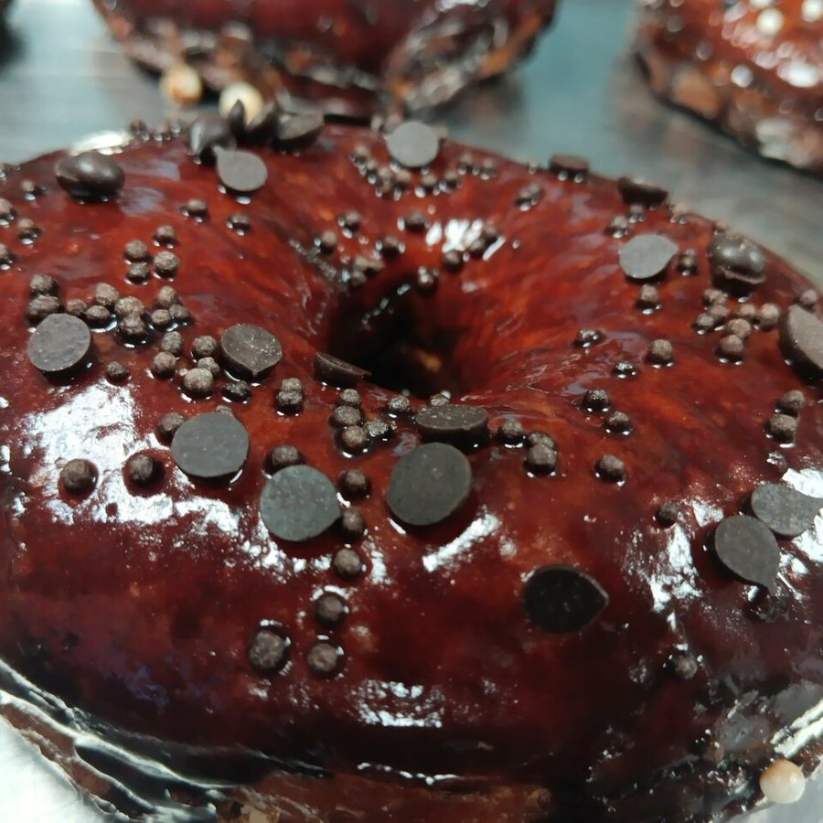
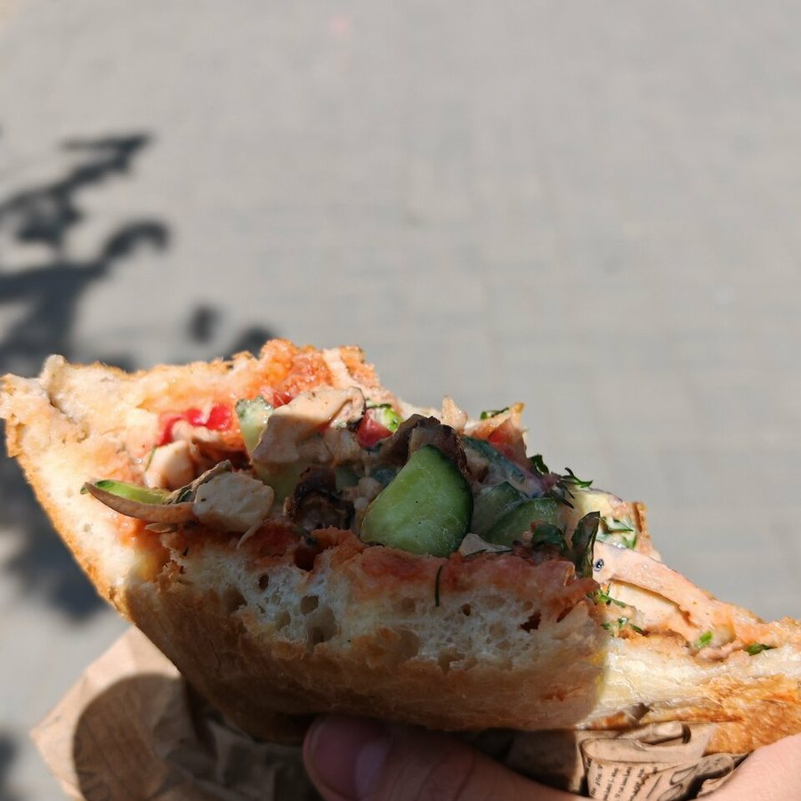
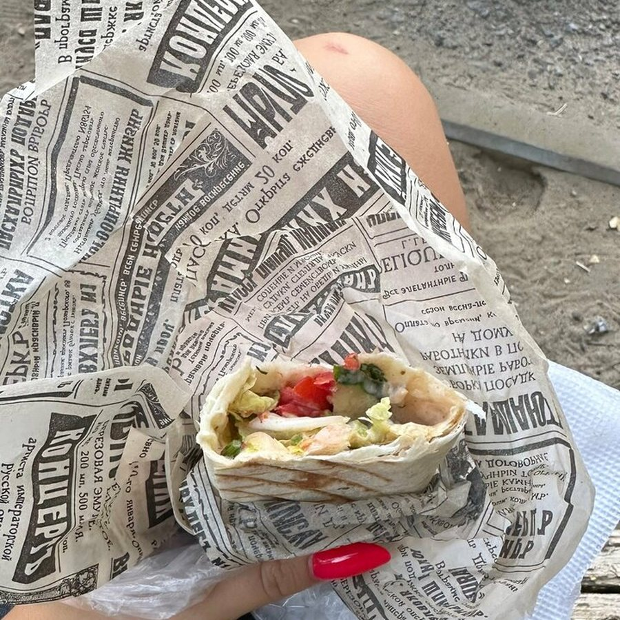
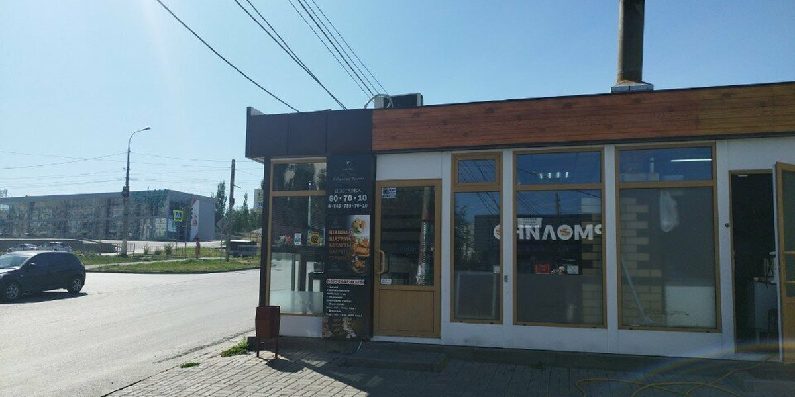
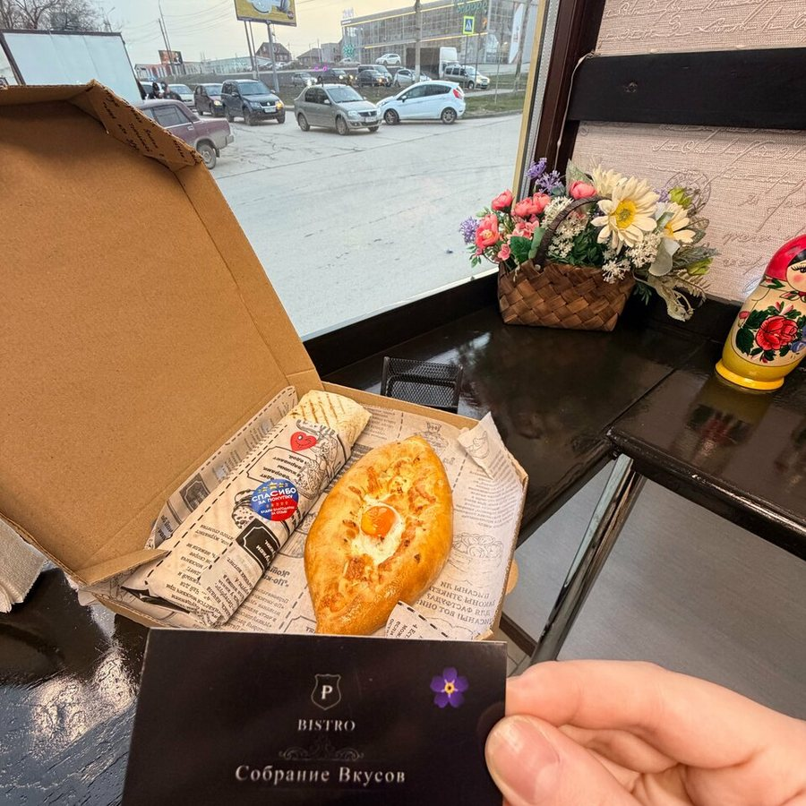
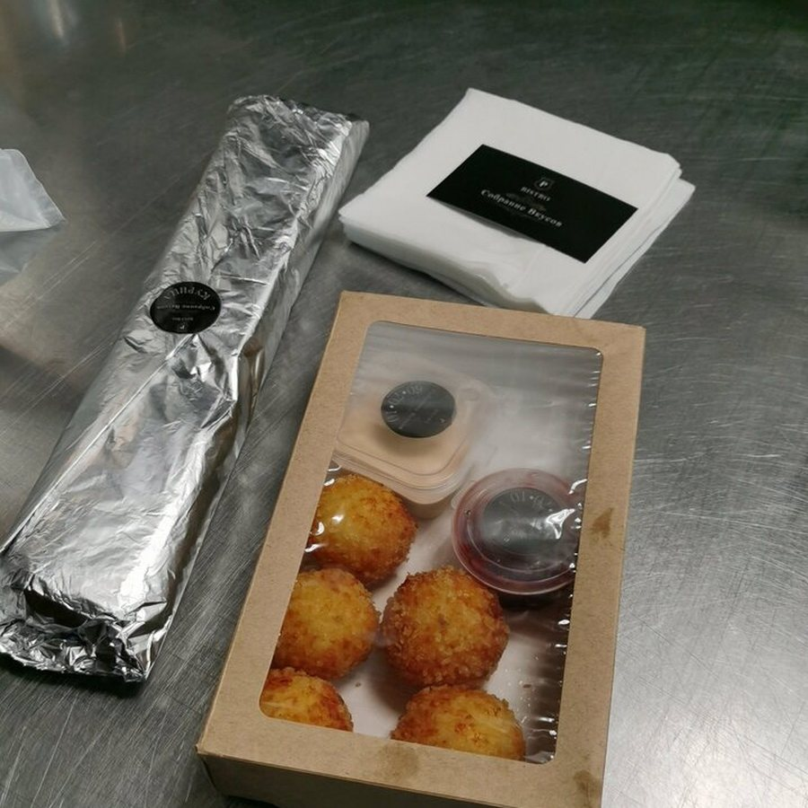

«Собрание вкусов» — небольшое бистро на Библиотечной, где мясо для шаурмы и донера снимают прямо с мангала, а рядом жарят шашлык, люля-кебаб и хачапури на шампуре. Гости отмечают сочное мясо, свежие овощи и лёгкий сливочный соус вместо майонеза. Можно поесть в зале — там подают в керамической посуде, — забрать с собой или заказать заранее по телефону.
★★★★★4,9рейтинг в Яндекс Картах · 98 оценок · 60 отзывов
4,9 из 5 при 98 оценках и 60 отзывах в Яндекс Картах. По отзывам мясо получает 97% положительных упоминаний, еда в целом — 96%, персонал — 91%.
🔥Мясо с мангала
Курицу, свинину и баранину для шаурмы и донера жарят на углях. В отзывах хвалят сочное мясо и лёгкий сливочный соус вместо майонеза.
🍢Шашлык и люля-кебаб
Свинина, баранина, куриная грудка и крылья на шампуре, люля-кебаб из четырёх видов фарша, овощи на мангале.
🧀Хачапури на шампуре
Сыр, завёрнутый в тесто и зажаренный на мангале. В отзывах его вспоминают почти так же часто, как шаурму.
🍽Шаурма на тарелке
В зале есть посадочные места и Wi-Fi, а подают в керамической посуде — не только в бумаге навынос.
🥡Навынос и предзаказ
Кофе с собой, самовывоз и предзаказ. Оплата наличными, картой и по QR-коду.
🥟Полуфабрикаты домой
Фарш для люля-кебаба, долма, вареники и маринованное мясо — можно забрать и приготовить самим.
Меню
Цены — из карточки заведения в Яндекс Картах. Позиции с пометкой «по меню зала» сняты с меню-борда в заведении: они точно есть в продаже, но цену на них уточняйте при заказе. Нажмите на раздел, чтобы развернуть.
Шаурма и донер
10 позиций
Шаурма из курицы
350 ₽ / 350 г
Шаурма из курицы сырная
360 ₽ / 390 г
Шаурма из свинины
380 ₽ / 350 г
Шаурма из свинины сырная
390 ₽ / 370 г
Шаурма из баранины
480 ₽ / 350 г
Шаурма вегетарианская
по меню зала
Шаурма с креветками и сыром
по меню зала
Донер
по меню зала
Баранина, телятина, курица или свинина
Дурум
по меню зала
С курицей или со свининой
Сувлаки
по меню зала
Шаурму делают из мяса с мангала; в зале подают на тарелке, навынос — в бумажной обёртке.
Шашлык, люля-кебаб и мангал
8 позиций
Шашлык из куриных крыльев
270 ₽ / 100 г
Шашлык из бараньей мякоти
380 ₽ / 100 г
Шашлык из куриной грудки
580 ₽ / 200 г
Шашлык из рёбер свинины
585 ₽ / 200 г
Шашлык из свинины шейки
645 ₽ / 200 г
Шашлык из корейки баранины
по меню зала
Шашлык из вырезки телятины и из сёмги
по меню зала
Люля-кебаб
по меню зала
Из курицы, из курицы с сыром, из телятины, из баранины
Закуски и хачапури
6 позиций
Хачапури на шампуре
390 ₽ / 250 г
Сыр, завёрнутый в тесто и зажаренный на мангале
Сырные шарики
310 ₽ / 150 г
Стрипсы
290 ₽ / 150 г
Наггетсы
270 ₽ / 150 г
Картофель фри
270 ₽ / 150 г
Овощи запечённые на мангале
по меню зала
Перец болгарский, помидор, баклажан, шампиньоны, картофель по-деревенски, ассорти из овощей
Свиная шея, свиные рёбра, вырезка телятины, куриная грудка, куриное крыло и голень, сёмга, сом
Раздел снят с меню-борда в зале: вес порций и цены уточняйте при заказе.
Меню и цены могут меняться — актуальные позиции уточняйте по телефону +7 (8442) 60-70-10.
Фото заведения
Павильон на Библиотечной, подачи в зале и навынос — фотографии из карточки заведения в Яндекс Картах.








Отзывы гостей
98 оценок и 60 отзывов в Яндекс Картах, средняя — 4,9. Ниже несколько отзывов гостей.
Мясо 97%Еда 96%Фастфуд 92%Персонал 91%Шаверма 87%
Дарья Акатова★★★★★
Сегодня спонтанно зашла к ребятам за шавермой с курицей. Дружелюбный персонал с тёплым общением, уточнили, насколько зажарить шаверму. Вкус просто песня. У них есть шаверма на тарелке! Я настолько привыкла к этой подаче в Питере, что по возвращении в Волгоград искала её везде. Для меня это бальзам на душу. Вывод простой — это 10/10.
Чеширский кот★★★★★
Ну очень вкусная шаурма! Брали куриную и свиную. Мяса много, овощей в меру, зелень и прекраснейший соус. Никаких «тонн майонеза», только лёгкий соус с нежнейшим сливочным вкусом. Цены приемлемые, сотрудники милые и общительные, в помещении чисто и даже можно посидеть.
Светлана Т.★★★★★
Впервые зашла в это заведение по рекомендации друга и осталась очень довольна: мало где встретишь такую вкусную шаурму. Мясо курицы прямиком с гриля, что очень важно, соус не майонез, как во многих других заведениях. Овощи свежие, готовилось прямо при мне, видела каждый ингредиент. Делают с любовью.
Vokrug★★★★★
Самый лучший дурум в городе: мясо, лаваш, лук, соусы и ничего лишнего. Ребята делают вкусную окрошку и хачапури на мангале. А в целом ассортимент огромен. Есть посадочные места: если кушать в заведении, подадут в красивой керамической посуде. Рекомендую.
Юлия★★★★★
Ребята большие молодцы! Вкусные шашлыки, люля! А какие они отзывчивые! Заказывали у них навынос шашлык и люля — так они отбили люля прямо перед нашим приходом, с собой дали лёд для транспортировки. Высший класс!
Баина Н.★★★★★
Недавно переехали с подругой в этот район и случайно наткнулись на это место, решили быстро перекусить. Нас ждала приятная неожиданность. Сотрудники очень вежливые ребята, а когда принесли шаурму, мы точно поняли, что вернёмся не раз. Шаурма большая, мясо сочное и нежное, соуса много, очень вкусные и свежие овощи, так ещё и по приемлемой цене.